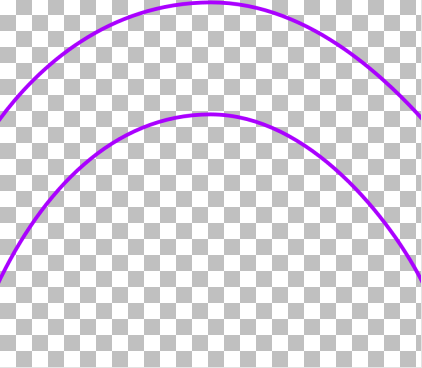
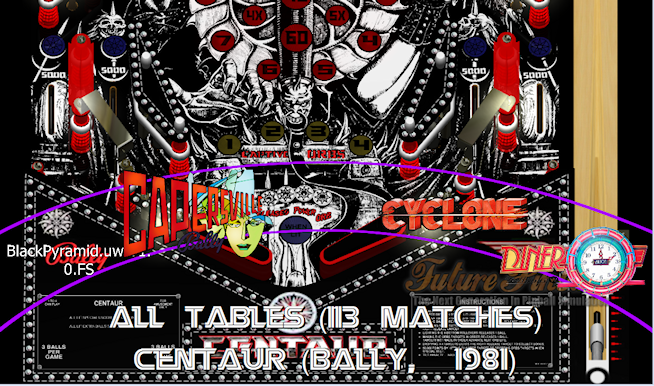

The "underlay" is an image layer displayed at the bottom of the screen, in the area where the "wheel" icons appear. Its only purpose is to serve as an extra decoration, and give you another way to customize the program's appearance.
Whenever you select a game in the wheel UI, PinballY loos for a suitable underlay specific to the game.
First, PinballY tries to find a custom underlay for the game's system (e.g., Visual Pinball X). If the game hasn't been configured yet, and its system is ambiguous, we skip this step. Assuming that the game has an associated system, PinballY looks for an image file named according to the system's media directory name, as defined in the settings, using the standard set of extensions for acceptable image file formats (.png, .jpg, etc). Note, though, that you should really only use PNG files for underlays, since it's the only format that supports transparency properly. It then looks for this file in the following folder path:
For example, if your Visual Pinball X system's media folder is set to "Visual Pinball X", the program looks for this file:
If there's no such file, the system looks for a default media file called underlay.png, searching in the usual places for default images (see Files & Folders):
After determining which underlay file to use for the newly selected game, PinballY checks to see if this is the same underlay file already being displayed. If so, nothing happens. If the file is different, PinballY switches the underlay to the new file.
To provide your own custom underlay, create a transparent PNG file, and place it as follows:
Here's an example of an underlay file. This is a PNG file saved with a transparent background, so that it can superimposed over the playfield image or video background layer; the light checkerboard pattern shows transparent areas. Note that you can use the "alpha" channel in a PNG image for partial transparency as well.
Here's how the underlay image above looks on the screen, when superimposed over the playfield background. 
Note how the original image has been stretched out to different proportions when displayed as the underlay. The display proportions are determined as follows:
The Maximum Width setting is expressed as a percentage of the window height. That might seem a strange given that we're applying it to the image width. But if you think about it, expressing a maximum image width in terms of the window width would be almost useless, since it would only let you stretch the image to a fixed portion of the width - which is what we're already doing by default when we stretch it to the full window width. What the maximum is really for is situations where the window is wider than it is tall. In those cases, we want to limit the horizontal stretch, so that the image isn't stretched out to ridiculously skinny proportions. In other words, we want to limit the width-to-height aspect ratio. That's why the limit has to be expressed as a percentage of the height - it's the width portion of the width-to-height ratio.
You can adjust all of these option settings in the Game Wheel section of the settings dialog.
PinballY fires the Javascript underlaychange event whenever it's about to change the underlay. This lets scripting code intervene, by canceling the change entirely or by substituting a different image file.
Javascript can initiate an underlay change on its own at any time, via the mainWindow object method setUnderlay(). This gives you the ability to change the whole underlay selection scheme, if you don't like the default scheme where the underlay is selected purely on the basis of the selected game's system.